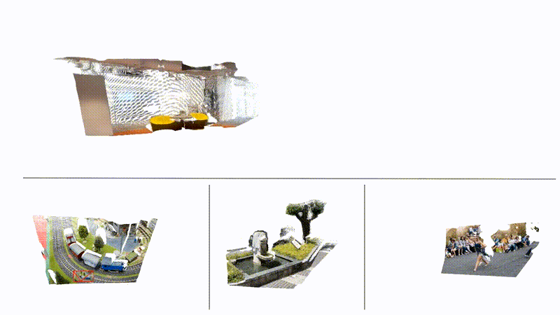
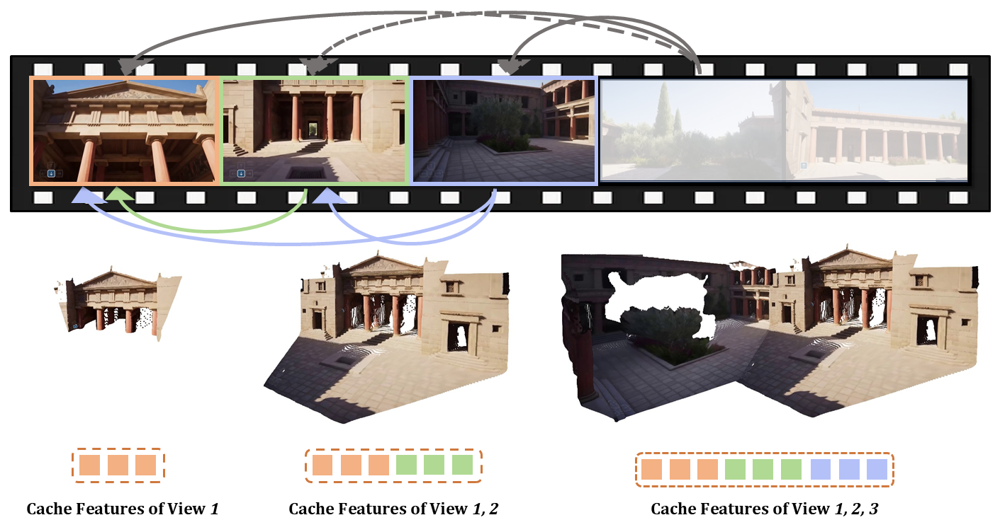

STream3R: Scalable Sequential 3D Reconstruction
with Causal Transformer

TL;DR: STream3R reformulates dense 3D reconstruction into a sequential registration task with causal attention.
TL;DR: STream3R reformulates dense 3D reconstruction into a sequential registration task with causal attention.
STream3R reconstruction on in-the-wild videos. Click any thumbnail below to explore its 3D reconstruction.
Dynamic Skiing
8 / 10
Dynamic Jumping
7 / 10
Genie3 Temple
1 / 10
Genie3 Street
2 / 10
Genie3 Indoor
3 / 10
We present STream3R, a novel approach to 3D reconstruction that reformulates pointmap prediction as a decoder-only Transformer problem. Existing state-of-the-art methods for multi-view reconstruction either depend on expensive global optimization or rely on simplistic memory mechanisms that scale poorly with sequence length. In contrast, STream3R introduces an streaming framework that processes image sequences efficiently using causal attention, inspired by advances in modern language modeling. By learning geometric priors from large-scale 3D datasets, STream3R generalizes well to diverse and challenging scenarios, including dynamic scenes where traditional methods often fail. Extensive experiments show that our method consistently outperforms prior work across both static and dynamic scene benchmarks. Moreover, STream3R is inherently compatible with LLM-style training infrastructure, enabling efficient large-scale pretraining and fine-tuning for various downstream 3D tasks. Our results underscore the potential of causal Transformer models for online 3D perception, paving the way for real-time 3D understanding in streaming environments.
Built on a causal transformer, STREAM3R processes streaming images sequentially for 3D reconstruction. Each input image is first tokenized using a shared-weight ViT encoder, and the resulting tokens are passed to our causal decoder. Each decoder layer begins with frame-wise self-attention. For subsequent views, the model applies causal attention to the memory tokens cached from previous observations. The outputs include point maps along with confidence maps in both world and camera coordinate systems, as long as the camera pose as shown on the right.
@article{stream3r2025,
title={STream3R: Scalable Sequential 3D Reconstruction with Causal Transformer},
author={Lan, Yushi and Luo, Yihang and Hong, Fangzhou and Zhou, Shangchen and Chen, Honghua and Lyu, Zhaoyang and Yang, Shuai and Dai, Bo and Loy, Chen Change and Pan, Xingang},
booktitle={arXiv preprint arXiv:2508.10893},
year={2025}
}
Related Links: We recognize several concurrent works on streaming methods. We encourage you to check them out: StreamVGGT, CUT3R, SLAM3R and Spann3R.
Acknowledgements: This page draws inspiration from DreamBooth and VGG-T.